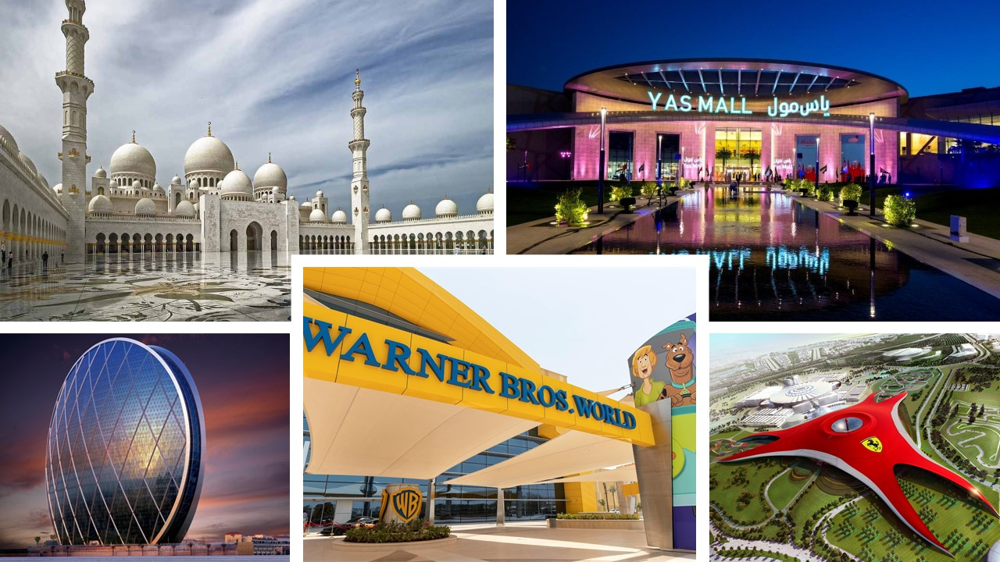
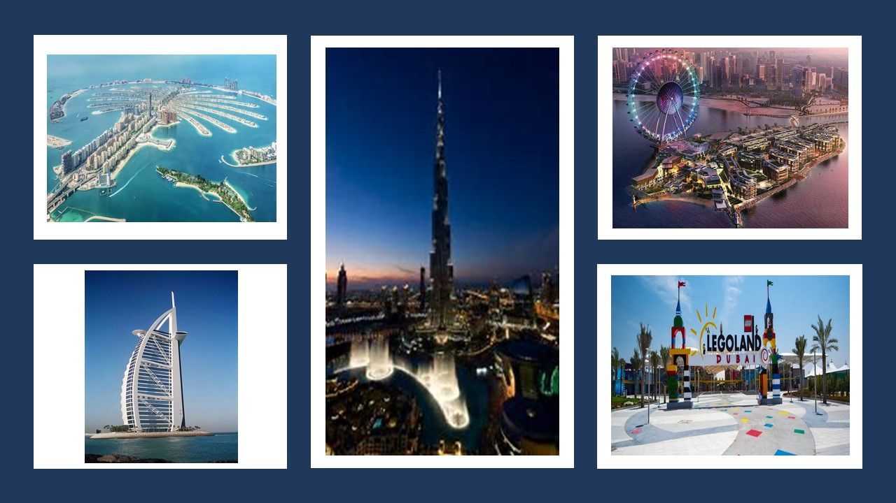
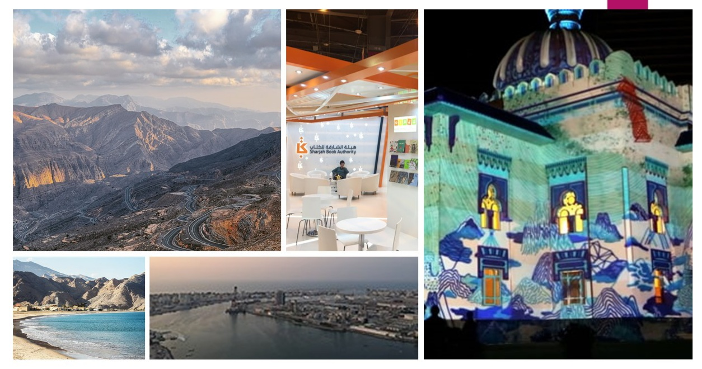

The U.A.E. is the beautiful country where I reside. This is where I have lived my entire life (almost). I love U.A.E and I am very happy to live here. Much of UAE, which was once covered by sandy-deserts has gloriously transformed into bustling modern cities. I thank the visionary rulers of the U.A.E. for building such a beautiful country.
The U.A.E is located in the Arabian Peninsula. It shares its borders with Oman and Saudi Arabia. The seven emirates which form the UAE are:
Abu Dhabi is the largest emirate and the capital of UAE. It is the second-most populous city in the United Arab Emirates. Being a large and developed metropolis, its renowned skyline is laced with skyscrapers and tall residential/commercial buildings. Places to visit here are The Grand Mosque, Abu Dhabi Corniche, Yas Mall, Ferrari World, Warner Bros. World, etc.
Dubai is an ever-evolving ultra-modern city. It is the most populous city in the UAE. The city has a marvellous skyline of huge skyscrapers including the iconic Burj Khalifa, which is still the tallest building in the world. It is a very popular city among tourists from all over the world as it possesses many luxurious hotels, beaches and leisure experiences. Places here are extremely picturesque. The Palm Island (Palm Jumeirah) is a large man-made island built in the shape of a palm tree. Dubai has a large number of residential communities which offer a high standard of living. Places to visit here are countless. To name a few are Dubai Mall, Dubai Parks and Resorts, Ain Dubai, Miracle Garden and Dubai Water Canal.
Sharjah is dubbed the "Cultural Capital of UAE". It hosts the prominent book festival known as "Sharjah International Book Fair". The "Sharjah Light Festival" is a celebration of science, creativity and heritage through a display of lights, colours and music at Sharjah's landmarks. Ras Al Khaimah is home to "Jebel Jais" which is the highest peak in the UAE. Jebel Jais is part of the Hajar Mountain ranges. A roadtrip through these ranges offers spectacular views of the mountains. Adventure options like hiking, ziplining and camping are available here. Fujairah offers elegant vistas of the Arabian Gulf and Hajar Mountains. Many fruit and vegetable farms can also be found here. Ajman and Umm Al Quwain are neighbouring Emirates of Sharjah and offer good leisure experiences of the coastline.
